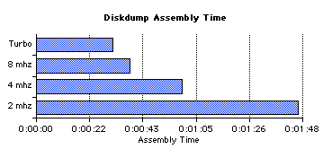

On this page
• variables
• method
• results
Related links
Performance
One of my major goals was to create a system that performed like an H8. What I have achieved is a system that puts on a pretty darned good H8 show on relatively fast Mac hardware, but for any number of reasons it will never perform "like an H8." The list of reasons can be found in various other design notes — especially time — and in the limitations section of the support page, but in brief:
- we have to contend with different Macintosh host systems operating at different levels of performance;
- we have to contend with different job mixes at any given point in time, some "polite" and others not, on the Macintosh host;
- while the emulator does a good job of emulating the H8's speed over time, it doesn't even try to emulate the processing speed of each 8080A instruction;
- we're emulating several hardware and software systems with one processor;
- and on and on...
Simply measuring performance and reporting it in terms that make sense, the subject of this design note, is something of an interesting challenge.
Performance Variables
There are a number of variables that affect the performance of the emulator and our ability to obtain and report meaningful performance statistics. The issues specific to each are discussed here.
CPU
-
8080A instruction execution is variable speed depending on:
- the speed of the Macintosh host system;
- the selected H8 clock speed;
- the instruction being executed.
While the pacing mechanism will reproduce the H8's processing speed fairly well over time on a sufficiently-fast host, it's not granular enough to use machine cycles to time events of very short duration. Add the new operating speeds (4 mhz, etc.), and you just can't count on instruction timing.
Interrupt Scheduler
-
In a real H8, hardware separate from the CPU handles interrupt prioritization and initiation and operates in parallel with the processor. Here, the request for the interrupt will generally occur outside of the H8's time universe, depending on the interrupt source. Checking for an interrupt and calculating the vector is done before every 8080A instruction is run, inside of the H8's time universe. The time required is variable, being just a little longer if there is an interrupt to be scheduled.
Memory
-
The emulator is required to enforce memory write protection inside the low 8K of the address space. Since we have to check the address before every write, and check the protection state for writes below the 8K-address boundary, memory write is slower than memory read. The extra write delay takes place inside the H8's time universe. This delay is fairly significant, and adds to the variability of execution time dependent on the dynamic instruction mix.
Disk
There are two components to consider:
Mechanical — HDOS expects the disks to spin at 300 rpm. It goes to some trouble, here and there, to verify that the disks are spinning at more or less the correct speed. We need to generate hole detection at the correct interval or we risk problems in the disk system. "Waiting for sector zero to come around" will take on average 100ms every time we change tracks.
HDOS enforces a number of delays to keep from overdriving the hardware. These include track-to-track step delay, head load debounce time, delay after write gate enable and others. We have a range of control over one or two of these variables, depending on which disk driver is in use and within limits enforced by the driver. In general, however, these useless delays are the price of good H-17 emulation.
I/O Transfer — Once we're in the process of actually moving data to and from the memory structures that represent disks, things progress very quickly as the lack of spin delay makes the emulated disk system ready to go when the next IN or OUT is executed. I/O transfer will move at the speed of the 8080A processor.
The fixed mechanical delays in the disk system, tied to the millisecond clock, are one reason that real-application benchmarks do not improve at the same rate as the increase in processor throughput.
(Switching to the HUG enhanced SY: driver, available on the release page, is a good way to improve overall system performance. The driver itself is significantly faster than the original H-17 driver, but in addition, you can set the track-to-track step delay down from 8ms minimum on the original to 2ms minimum on the HUG driver. That's a major improvement.)
Event-Driven I/O
-
In order to reduce internal polling overhead, an OUT to a device will generally push the character all the way to the device while the OUT instruction is processing. This makes OUT processing variable length. IN works in much the same way. All of this time is inside the H8's time universe.
External Factors
-
There are other factors, completely out of our control, that will tend to take time away from the emulator:
- low-level Macintosh interrupt handling (inside and outside the H8's time universe);
- mouse movement (a low-level interrupt condition);
- time used by other tasks being run on the host Macintosh, whether we are the foreground application or one of the background applications;
- dead time caused by the user lingering in the menu system, dragging windows, etc.
None of this can be quantified.
Methodology
After all the caveats, you must be wondering why we're bothering to measure performance at all! In fact, there are some useful measurements that add to our understanding of how the emulator performs. This section will the methodology used to collect the statistics. Results are in the following section.
Point of View
-
When reporting performance statistics, it's important to establish the point of view. As discussed in time, significant portions of emulation overhead take place outside the H8's time universe, which results in an apparent slowing of the H8's internal clock. Measurements taken based on the internal clock will not necessarily agree with measurements taken using an external clock.
Each of the measurements discussed below will clearly state the point of view of the observer.
General Methodology
-
I had no specialized or highly accurate timing hardware available to me when making external observations; all I used was the sweep second hand on my quartz watch. This makes it impossible to accurately measure an event of very short duration.
For that reason, the tests that require external observation were constructed to take quite a bit of "wall time" in order to minimize the error induced by this crude measurement tool.
Internally observed tests were all based on the 16-bit tick counter which, according to the definition of time itself, is... well, it's the definition of time itself!
Reference Machine
-
The host Macintosh configuration for these tests was:
- 300 mhz PowerPC G3, beige desktop enclosure;
- 6 G/byte IDE disk drive;
- 256 M/bytes of memory — 5 M/bytes allocated to the emulator.
In all cases, the H8 is the foreground or "front" application with nothing in the background but the finder. I was "hands off" during test execution: no mouse movements, no keystrokes. These results are all best case as a result.
Results
This section will present and discuss my performance testing results in the following areas:
Clock Drift
It seems reasonable to start by quantifying the minimum clock drift.
The following program was run under PAM/8. The GUI window was front; the terminal window was open behind it. The program sends a BEL character to the terminal once every time the high-order byte of the 16-bit tick counter reaches zero.
040.034 HITICK EQU 40034A 040.100 ORG 40100A 040.100 WAIT.Z EQU * 040.100 072 034 040 LDA HITICK 040.103 267 ORA A 040.104 302 100 040 JNZ WAIT.Z 040.107 076 007 MVI A,7 040.111 323 350 OUT 350Q 040.113 WAITNZ EQU * 040.113 072 034 040 LDA HITICK 040.116 267 ORA A 040.117 312 113 040 JZ WAITNZ 040.122 303 100 040 JMP WAIT.Z 040.125 000 END WAIT.Z
The high byte of the tick counter will transition from 377q to 000q once every 65,536 clock ticks. There are 500 ticks/second in the emulator, so this will go to zero every 131.072 seconds by internal observation.
Results are based on external observation.
|
Release |
System Speed |
Time (seconds) |
|---|---|---|
|
R4.2 |
Normal |
135 |
|
Turbo |
135 |
|
|
R5 |
2 mhz |
131 |
|
4 mhz |
131 |
|
|
8 mhz |
131 |
|
|
Turbo |
135 |
On the reference system when running at non-turbo speeds, there is no apparent clock drift. This is due to:
- the pacing code which allows internal emulator operations to start after the pacing count has expired, regardless of whether the 1ms timer has expired;
- the speed of the host system.
The following figure is a fair representation of time usage inside of a millisecond time period on the reference system when running an "average" mix of 8080A code. The length of the green bars is based on the results of the raw CPU speed test below.

In release 4.2, the emulator would:
- exhaust the (instruction based) pacing count;
- waste time until the clock expired;
- do internal processing, which averaged approximately 29 microseconds over time.
The clock was restarted after this internal processing. The accumulation of 29 microseconds per millisecond of overhead resulted in clock drift.
Release 5 allows this internal processing to start before the clock expires so that when the millisecond timer expires it can be immediately restarted, virtually eliminating minimum drift.
(If the user lingers on a menu item or walks away with a file-open dialog open, for example, drift becomes effectively infinite. This cannot be eliminated.)
Turbo mode, by definition, executes instructions until the clock expires. Therefore, emulator internal processing takes place after the tick and drift accumulates, just as with R4.2, but because of the increased speed of R5, it accumulates at an average of 22 microseconds per millisecond.
Please be clear on this point: this figure is the minimum measured clock drift. As soon as other portions of the emulator get busy, other applications are launched, you select a menu item, etc., this drift will grow, in some cases significantly and, in all cases, unpredictably.
Now consider a slower host system:
This system is fast enough to run at 2 mhz with no drift and at 4 mhz with a little drift. But the user will get no benefit from the 8 mhz or Turbo settings since the system is not fast enough to squeeze in more processing before the clock ticks. Drift is also likely to be much longer than above due to the slower processing of the emulator's internal housekeeping code.
Raw CPU Speed
Dave Wallace (ref. Cedits and Contributions) provided the following benchmark program. It runs with interrupts off to eliminate PAM/8 and other operating system interrupt overhead so that we get an accurate instruction count.
The program sounds a bell and then starts a long loop. The outer loop runs 50 times. The inner loop runs 65,536 times for each cycle through the outer loop, or 3,276,800 times.
The body of the loop contains a mix of instructions with real-8080A execution times representative of a typical user program. The comment to the right of each instruction gives the number of clock states required to execute the instruction on a real 8080A.
* Written by D.Wallace. ORG 42200A START EQU * DI MVI A,7 OUT 350Q LXI B,0 MVI D,50 LOOP EQU * 8080 clock states PUSH B 11 PUSH D 11 PUSH H 11 POP H 10 POP D 10 POP B 10 NOP 4 NOP 4 NOP 4 NOP 4 MOV A,B 5 XRA D 4 RAL 4 DCX B 5 MOV A,B 5 ORA C 4 JNZ LOOP 10 * * 116 for each loop * 65536 loops * * 7,602,176 per set of 50 * DCR D 5 JNZ LOOP 10 * * +15 = 7,602,191 for each loop * 50 loops * * 380,109,550 clocks, total * MVI A,7 OUT 350Q EI XRA A SCALL 0 END START
The H8 uses a 2.048 megahertz clock, which gives us an anticipated interrupts-off execution time of 380,109,550 divided by 2,048,000 = 185.6 seconds on real hardware. The program will cause the emulator to execute ((17*65536)+2)*50 = 55,705,700 instructions. Dividing by the execution time gives us instructions per second.
Results are measured externally.
|
Version |
Mode |
Time (seconds) |
Average Inst/Sec |
|---|---|---|---|
|
R4.2 |
normal |
181 |
307,700 |
|
Turbo |
26 |
2,142,500 |
|
|
R5 |
2 mhz |
185 |
301,100 |
|
4 mhz |
93 |
598,900 |
|
|
8 mhz |
47 |
1,185,200 |
|
|
Turbo |
29 |
1,920,886 |
R4.2 ran a little too fast. But R5, when set to 2 mhz, runs the test loop in exactly the same amount of time as a real H8, in minimum-drift conditions.
BASIC Benchmark
A better CPU performance benchmark is the basic program used by Creative Computing way back in 1984 to rate the performance of some 183 different machines, ranging from a Cray-1 to a TI programmable calculator.
Any benchmark is contrived — one has to wonder why the authors wanted to compare the performance of a Cray to a TI calculator — but we have some reason to believe that this benchmark is more real-world than some of the others above, from the perspective of the mix of machine instructions that are executed in interpreting the program. And since the program writes to the screen only at the very end and does not access the disk, I/O doesn't get in the way of a good processor speed test.
00010 REM Ahl's Simple Benchmark 00020 FOR N=1 TO 100: A=N 00030 FOR I=1 TO 10 00040 A=SQR(A): R=R+RND(1) 00050 NEXT I 00060 FOR I=1 TO 10 00070 A=A^2: R=R+RND(1) 00080 NEXT I 00090 S=S+A: NEXT N 00100 PRINT ABS(1010-S/5) 00110 PRINT ABS(1000-R)
This program was meant to show floating-point accuracy and the "randomness" of the random number generator, as well as execution speed. All we care about here is execution speed.
Results by external observation.
|
Host |
Time (h:mm:ss) |
|
|---|---|---|
|
H8 circa 1984 |
0:01:35 |
|
|
R5 |
2 mhz |
0:01:36 |
|
4 mhz |
0:00:44 |
|
|
8 mhz |
0:00:21 |
|
|
Turbo |
0:00:13 |
|
I was a little surprised to run a second longer than a real H8, given the results of the speed benchmark above. But since my time measurement methods are crude and I don't know how Creative Computing measured their results, I will leave them as is and call them 'close enough.'
Turbo Mode and Its Affect on Applications
We get a significant bump in throughput in Turbo mode, but not quite the seven-times improvement we get in the processor. This is due to the fixed speed of the disk drives and the maximum 2,000 cps we get from the H-19 terminal.
For example, I assembled the disk dump program (available on the release page) using the following command:
asm
*=sy2:diskdump
I entered the actual command on a separate line to take assembler load time out of the equation. Results by external observation.
|
Release |
Speed |
Time (h:mm:ss) |
|---|---|---|
|
R5 |
2 mhz |
0:01:46 |
|
4 mhz |
0:00:59 |
|
|
8 mhz |
0:00:38 |
|
|
Turbo |
0:00:31 |
Looking at CPU time alone, we might expect a Turbo mode completion time of around 15 seconds on the reference machine if we did a linear regression based on the raw CPU speed results above. The extra 16 seconds of execution time is due to the fixed disk rotation delays and other delays imposed by the device driver on this "mechanical" device.
In fact, when moving from 2 mhz to 4 mhz, assembly time was nearly cut in half. But as we got closer to Turbo speeds the improvement was less and less due to the fixed speed of the I/O device. CPU time, which was improving at each step, was a smaller and smaller portion of total time; improving it had less and less impact on total execution time.
The assembler is a heavy user of both the CPU and the disk system, which makes it a good example. In general, the more I/O-bound an application is the less it will benefit from the higher clock rates.